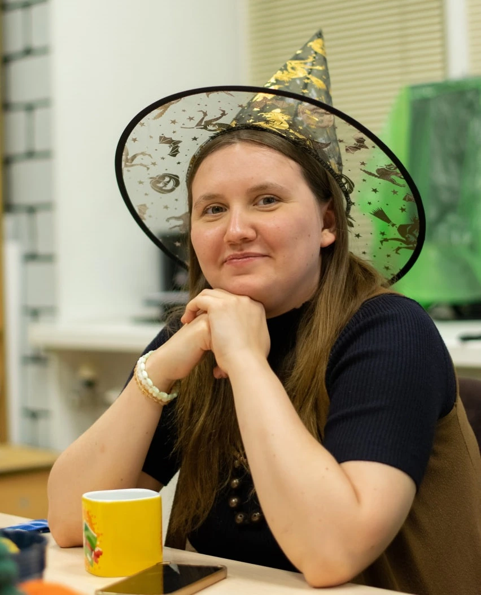

Алена Вахрушева · авторские НРИ & DnD
играй
со смыслом.
Немного магии. Много человеческого.
Познакомимся
Колдотворец
За туманами — школа. За порогом — твоя новая жизнь.
Проживи один учебный год в магической академии посреди зачарованного леса. Вари зелья, знакомься с духами, находи друзей и разгадывай тайны старой усадьбы. Тёплая история о взрослении и магии, которая всегда была рядом.
Для игрыДневник, колода Таро из 78 карт и несколько шестигранных кубиков.
Ночная радиостанция
Крути винил. Держи эфир. Слушай очень внимательно.
Твоя первая ночная смена начинается с музыки — и странных звонков. Собери собственный плейлист из двенадцати песен, пройди четыре акта и запиши историю своего эфира. Между статикой и тишиной есть кое-что ещё.
Для игры1–2 часа, две шестигранные кости, музыкальный плеер и журнал для записей.
Темы: жестокость, потеря разума, абьюз.
Глубина
Самое тёплое здесь — твоя кровь.
Ты — единственный выживший на буровой станции «Глубина-141-Л». Над головой километры воды, связь оборвана, за переборками что-то движется. Чини станцию, веди журнал и пытайся выбраться. История об изоляции, страхе и человеческой стойкости.
Для игрыКолода карт без джокеров, один шестигранный кубик, 10 жетонов и дневник или диктофон.
Темы: изоляция, гибель, безнадёжность.
Продолжим историю?
Заходи.
Тебе здесь рады.
Рассказать про своего героя, спросить об игре или просто поделиться тем, что зацепило — для всего этого можно написать мне. А в блоге всегда найдётся ещё одна история и повод улыбнуться.